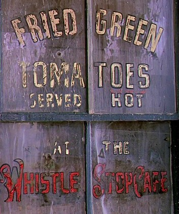
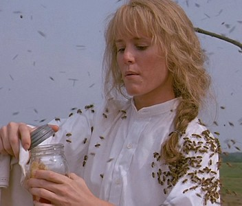
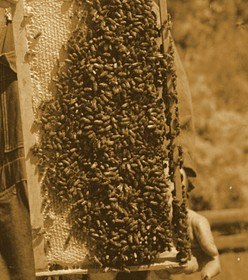

Breakfast, dinner, supper
BILL OF
FARE
FARE
At the counter, or out on the porch where you can hear the trains come in.

Our window. Lettered by Idgie.
FROM THE KITCHEN
Biscuits and Honey
10¢
Hot buttermilk biscuits, sweet butter, bee tree honey and a piece of the comb.
Idgie fetches it from the bee tree.
Breakfast Plate
15¢
Two eggs any style, grits, a biscuit and sausage gravy.
Butter Beans
10¢
Simmered with salt pork, a wedge of skillet cornbread.


BEE TREE
HONEY
pint jar 15¢
BARBECUE
Big George’s Barbecue Plate
25¢
Pork shoulder roasted slow and pulled, tomato and cider vinegar sauce, slaw, white bread.
The secret’s in the sauce.
By the back step
A cat chalked on the gate means a kind lady lives here.
FREE PLATES
AT THE BACK DOOR
AT THE BACK DOOR
Smokey, yours is warm.
PIE
Pecan Pie
10¢
Toasted pecans in brown sugar and cane syrup custard, flaky crust.
TO DRINK
Peach Sweet Tea
5¢
Brewed strong with ripe peaches, iced, lemon and mint.
Coffee
5¢
Hot all day. Refills free.
Towanda!
I. Threadgoode and R. Jamison, props. Ask Sipsey about the sauce.